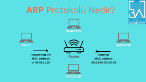

1. Adres Çözümleme: Bir cihaz, belirli bir IP adresine sahip bir cihazla iletişim kurmak istediğinde, önce onun MAC adresini bilmesi gerekir.
2. ARP İsteği (ARP Request): Ağdaki tüm cihazlara (broadcast) "Bu IP adresine sahip cihazın MAC adresi nedir?" diye sorar.
3. ARP Yanıtı (ARP Reply): Hedef cihaz, kendi MAC adresini içeren bir yanıt gönderir.
4. Önbelleğe Kaydetme: MAC adresi ARP önbelleğine kaydedilir ve sonraki talepler için kullanılır.
